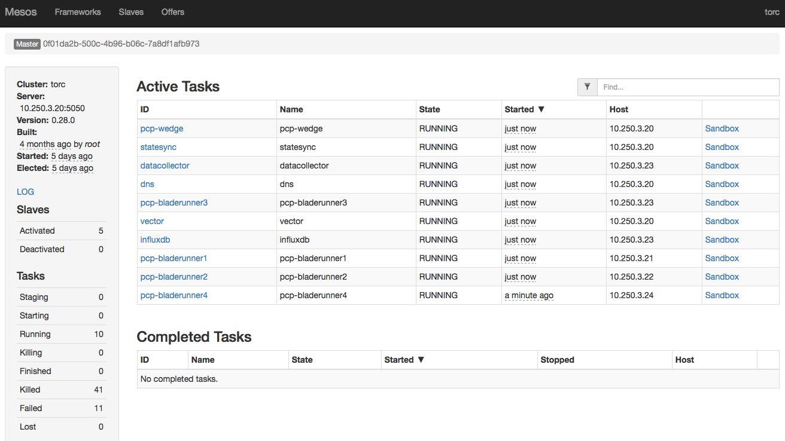
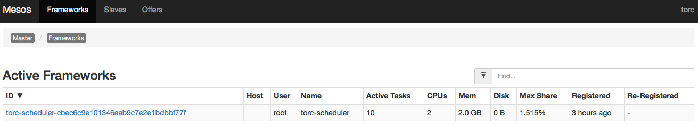
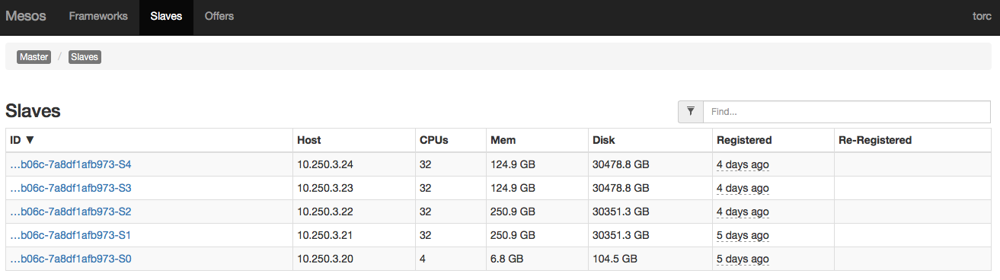
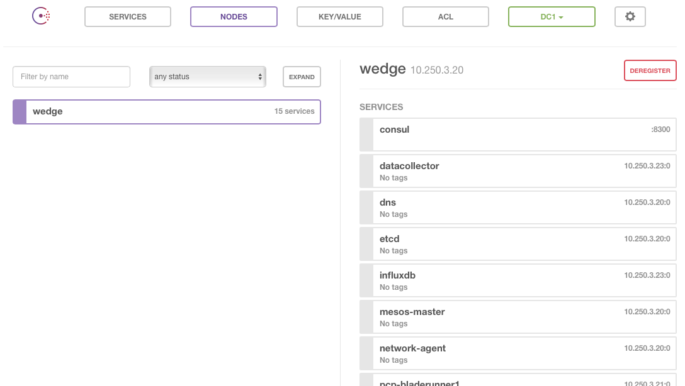
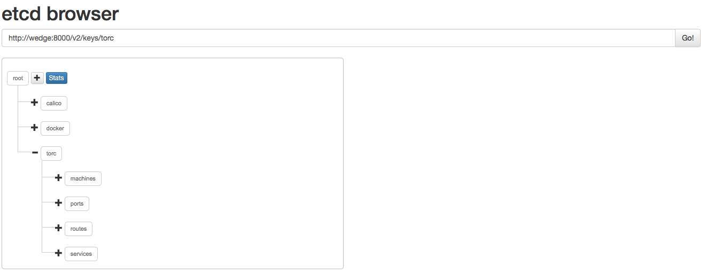
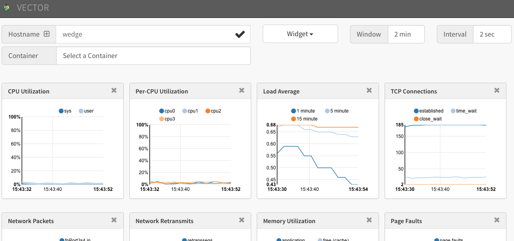
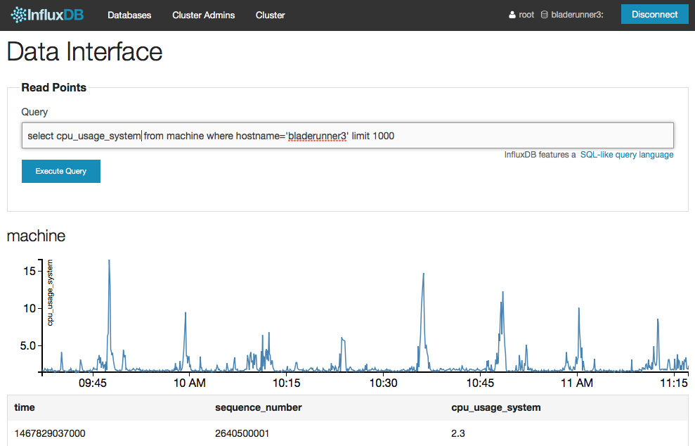

Explore ToRC Services
Let’s explore the ToRC Core Services and its functions.
Mesos
Mesos serves as the main resource manager for our rack. It also provides Admin-UIs for resource-usage of:
Running Tasks

Active Frameworks/Schedulers, like our ToRC Scheduler

Connected Slaves

DNS / Consul
The DNS service contains a regular bind9 service responsible for the nodes in our homer.ave domain, and the Consul service, which handles all the lookups for all the containers, services in the service.torc domain, like etcd.service.torc.
The Consul Admin UI offers a list of all know services in the service domain.

If you ssh in to one of the compute nodes you should now be able to ping ToRC related services and nodes:
bladerunner@bladerunner1:~$ ping wedge.homer.ave
bladerunner@bladerunner1:~$ ping etcd.service.torc
etcd / statesync
etcd serves as our state-soup. It provides a unified view across the operational state of containers, machine, and network.
statesync constantly collects data from the network agent and the ToRC Scheduler and pushes it to etcd.
etcd also gets used by Docker and Calico to share network configuration across all the compute nodes.
The etcd-browser provides a UI to inspect the data stored in etcd.

Query ToRC’s etcd at http://wedge:8000
Performance CoPilot / Vector
Performance CoPilot (pcp) collects and provides access to system metrics for hosts and containers. Each of the machines including the wedge have a pcp agent running to collect those metrics.
Vector is a performance monitoring UI which provides access to different metrics served by the pcp agents on each machine.

The default dashboards for:
InfluxDB / datacollector
We use InfluxDB as our time-series database. The datacollector agent constantly pulls a defined set of machine and container related metrics and stores them in InfluxDB.
Those time series can be used for scaling decisions, to detect anomalies, or any other automated optimization. Please check out our DNS Example.
Important: We use an older version of InfluxDB, v0.8.8. We haven’t upgraded yet because of major breaking changes in their API.
InfluxDB offers a UI to query and visualize the stored metrics.

In our demo setup we run InfluxDB on bladerunner3 with username root and password root, and the name of our database name is torc.
Login at: http://bladerunner3:8083 and select Explore Data for the torc database.
Some Sample Queries:
list series
select * from machine where hostname = 'bladerunner1' limit 1000
select * from network where hostname = 'bladerunner1' and interface_name = 'p2p2' limit 1000
ToRC Scheduler
The ToRC Scheduler is responsible for starting and supervising all these core services. It also serves as the endpoint for all the sub-schedulers, for example the DNS-Scheduler.
The ToRC Scheduler offers some status pages in json. Btw, a browser extensions like JSONView helps in formatting the output in a more human-readable way.
- List Services: http://wedge:3000/services/running
- List Compute Nodes: http://wedge:3000/nodes
Next: DNS Scheduler Example.